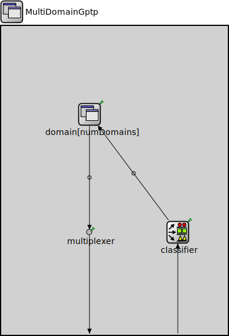

Package: inet.linklayer.ieee8021as
MultiDomainGptp
compound moduleThis module combines multiple ~Gptp modules, one per time domain into a multi time domain time synchronization module. Each gPTP time domain is automatically configured to use the corresponding subclock of the clock passed in to this module.
<b>See also:</b> ~MultiClock
Usage diagram
The following diagram shows usage relationships between types. Unresolved types are missing from the diagram.
Inheritance diagram
The following diagram shows inheritance relationships for this type. Unresolved types are missing from the diagram.
Parameters
| Name | Type | Default value | Description |
|---|---|---|---|
| clockModule | string |
relative module path of the multi clock |
|
| interfaceTableModule | string |
relative module path of the interface table |
|
| numDomains | int |
number of time synchronization domains |
|
| gptpNodeType | string |
@enum("GptpNodeType"): MASTER_NODE, BRIDGE_NODE, SLAVE_NODE |
Properties
| Name | Value | Description |
|---|---|---|
| display | i=block/app |
Gates
| Name | Direction | Size | Description |
|---|---|---|---|
| socketIn | input | ||
| socketOut | output |
Unassigned submodule parameters
| Name | Type | Default value | Description |
|---|---|---|---|
| multiplexer.displayStringTextFormat | string | "passed %p pk (%l)" |
determines the text that is written on top of the submodule |
| multiplexer.forwardServiceRegistration | bool | true | |
| multiplexer.forwardProtocolRegistration | bool | true | |
| classifier.displayStringTextFormat | string | "classified %p pk (%l)" |
determines the text that is written on top of the submodule |
| classifier.reverseOrder | bool | false | |
| classifier.classifierClass | string | "inet::GptpDomainNumberClassifier" |
determines the output queue of packets, the parameter must be the name of a C++ class which implements the IPacketClassifierFunction interface and is registered via Register_Class |
Source code
// // This module combines multiple ~Gptp modules, one per time domain into a multi // time domain time synchronization module. Each gPTP time domain is automatically // configured to use the corresponding subclock of the clock passed in to this // module. // // @see ~MultiClock // module MultiDomainGptp like IApp { parameters: string clockModule; // relative module path of the multi clock string interfaceTableModule; // relative module path of the interface table int numDomains; // number of time synchronization domains string gptpNodeType; // @enum("GptpNodeType"): MASTER_NODE, BRIDGE_NODE, SLAVE_NODE @display("i=block/app"); gates: input socketIn; output socketOut; submodules: domain[numDomains]: <default("Gptp")> like IApp { gptpNodeType = default(parent.gptpNodeType); clockModule = default(absPath(parent.clockModule) + ".clock[" + string(this.index) + "]"); interfaceTableModule = default(absPath(parent.interfaceTableModule)); domainNumber = default(this.index); @display("p=150,150,row,150"); } multiplexer: PacketMultiplexer { @display("p=150,350"); } classifier: PacketClassifier { classifierClass = default("inet::GptpDomainNumberClassifier"); @display("p=300,350"); } connections: for i=0..numDomains-1 { domain[i].socketOut --> multiplexer.in++; classifier.out++ --> domain[i].socketIn; } socketIn --> { @display("m=s"); } --> classifier.in; multiplexer.out --> { @display("m=s"); } --> socketOut; }File: src/inet/linklayer/ieee8021as/MultiDomainGptp.ned
 This documentation is released under the Creative Commons license
This documentation is released under the Creative Commons license